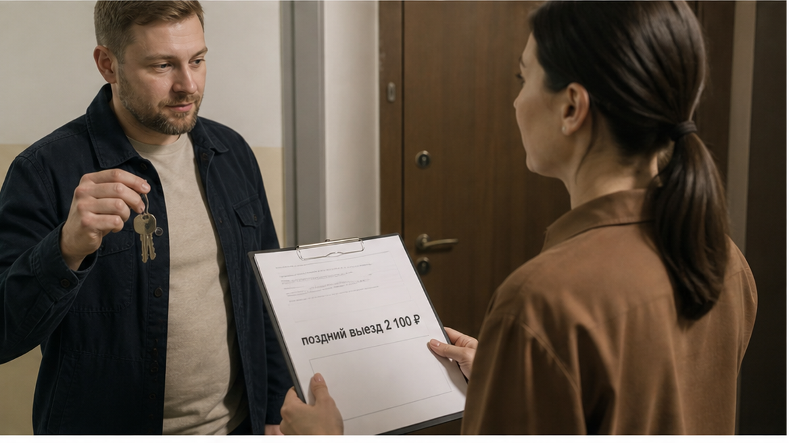

— «У меня поезд днём, а выезд в полдень. Куда мне четыре часа с двумя чемоданами?» — спросил гость у двери. Он прожил три ночи по 3 400 ₽, а перед выходом услышал: «Поздний выезд — ещё 2 100 ₽». Следом ему предложили оставить багаж бесплатно в коридоре подъезда. Кейс сломался не на сумме, а на этой фразе: «там никто не тронет».
Я хост посуточной в Тюмени. Это «Добрый дом». В Telegram и MAX я обычно заранее отвечаю на такие вопросы: во сколько выезд, можно ли задержаться и где оставить чемоданы.
Гость часто читает время выезда как каприз хоста. Квартира вроде бы стоит пустая, значит, чемоданы можно оставить до вечера. Но между одним гостем и следующим есть рабочее окно.
За четыре часа нужно постирать постель и полотенца, убрать санузел, дать химии подействовать и высохнуть, привести в порядок кухню, проверить посуду, вынести мусор и подготовить ключи. Клинер приходит не «когда сможет»: вечером в квартиру заезжает следующий человек, который уже заплатил за ночь.
Поэтому полдень — не переговорная позиция. Если его сдвинуть, начнёт рассыпаться чужая бронь. Как устроена уборка между гостями, я подробно показывал в разборе про уборку между заездами: там хорошо видно, откуда берутся эти четыре часа.
Сама сумма меня не смущает. Если поздний выезд возможен, хост переносит уборку, ищет свободного клинера или просит человека выйти в нерабочее время. За это может быть доплата.
Но есть два разных случая.
Если следующая бронь уже стоит, поздний выезд не стоит 2 100 ₽. Он невозможен вообще. Деньги не создадут четыре часа, которые уже проданы другому гостю. Здесь нормальный ответ — «нельзя», без попытки взять оплату за то, чего хост предоставить не может.
Если брони после вас нет, поздний выезд можно обсуждать. Но стоимость нужно назвать до оплаты или хотя бы до заезда, а не тогда, когда гость уже стоит с ключами в руке. Доплата у двери воспринимается как ловушка, даже если сама арифметика разумная. О таких ситуациях я писал в материале про доплаты, которые всплывают у двери: сумма может быть обоснованной, но момент разговора всё портит.
Фраза «квартира всё равно будет пустая» тоже обманчива. Пустая квартира не значит бесплатная. В ней остаются стирка, химия, работа клинера и чужой сдвинутый график.
А вы на чьей стороне? Хост неправ, когда называет 2 100 ₽ уже у двери, или гость должен был сам спросить про время выезда до бронирования? Ответьте в Telegram или MAX — интересно, где для вас проходит граница между честной доплатой и неприятным сюрпризом.

Но главная проблема в этом кейсе была не в позднем выезде. Гостю предложили оставить два чемодана в коридоре подъезда: «там никто не тронет». Так не заселяем.
Подъезд — общая зона. За вещи там не отвечает ни хост, ни управляющая компания, ни соседи. Камера, если она есть, может смотреть на входную дверь, а не на площадку у лифта. Два бесхозных чемодана в общей зоне — это не безопасное хранение, а риск для гостя и для всего дома.
Если багаж пропадёт, разговор будет неприятным для всех: гость скажет, что оставил вещи по совету хоста, а хост ответит, что ничего не гарантировал. Такую ситуацию лучше не создавать вообще.
Что можно предложить вместо подъезда:
Похожая проблема бывает и с другой стороны — когда человек приезжает после ночного поезда и хочет попасть в квартиру раньше. В разборе раннего заезда в Тюмени я показывал ту же механику: между гостями есть окно уборки, и его нельзя отменить одним сообщением.
В этом случае хост ошибся не в самой цене. Он назвал деньги у двери вместо того, чтобы обсудить их заранее, а потом предложил решение, за которое не может отвечать.
2 100 ₽ — это разговор о времени. Коридор подъезда — это перевод риска на гостя. Если хост не может запереть ваш багаж, значит, он не может его хранить.
До оплаты достаточно задать три вопроса:
Если на всё отвечают спокойно и заранее, сюрпризов у двери будет меньше. А если условия появляются только в последний момент, лучше узнать об этом до перевода денег.
Свободные даты квартир «Добрый дом» в Тюмени можно уточнить в Telegram-канале или в MAX. Забронировать квартиру можно на сайте или через форму бронирования. Если удобнее обсудить поезд, выезд и багаж голосом, звоните: +7 (993) 574-83-22. Менеджер также отвечает в Telegram.